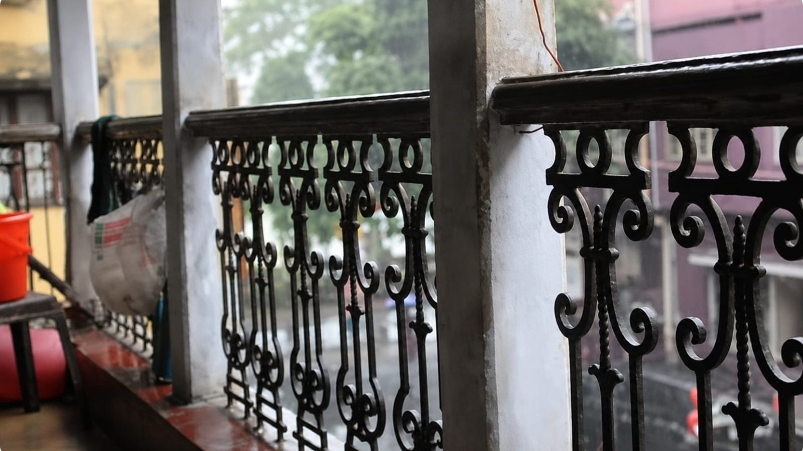

আমাদের বাড়ির সেই বিকেলগুলো
লিখেছেন — শুভ্রজিৎ সেনবিকেলের আলো যখন ধীরে ধীরে দোতলার বারান্দায় এসে পড়ত, তখন বাড়ির প্রতিটি কোণ যেন গল্প বলতে শুরু করত। সেইসব দিন, সেইসব মুখ, আজও আমাদের মনে রয়ে গেছে।
সম্পূর্ণ লেখা পড়ুন ↗স্মৃতি · সৃজন · আড্ডা
আমাদের পরিবারের মানুষ, স্মৃতি, হাসি, সৃষ্টিশীলতা আর ভালোবাসার ছোট্ট মাসিক আয়োজন।
এই সংখ্যাটি পড়ুন →
পরিবার শুধু একসঙ্গে থাকার নাম নয়। পরিবার মানে একে অপরের গল্প শোনা, স্মৃতি ভাগ করে নেওয়া, নতুন কিছু সৃষ্টি করা এবং ভালোবাসাকে বাঁচিয়ে রাখা।
“দোতলার বারান্দা” সেই ভালোবাসারই একটি ডিজিটাল ঠিকানা। এখানে পরিবারের প্রত্যেকে নিজের লেখা, ছবি, আঁকা, ভাবনা ও স্মৃতি সবার সঙ্গে ভাগ করে নিতে পারবেন।
এখানে পরিবারের
একটি সুন্দর ছবি দিন
বিকেলের আলো যখন ধীরে ধীরে দোতলার বারান্দায় এসে পড়ত, তখন বাড়ির প্রতিটি কোণ যেন গল্প বলতে শুরু করত। সেইসব দিন, সেইসব মুখ, আজও আমাদের মনে রয়ে গেছে।
সম্পূর্ণ লেখা পড়ুন ↗পরিবার হলো সেই জায়গা,
যেখানে ছোট ছোট মুহূর্তগুলোই
বড় স্মৃতি হয়ে থাকে।
— দোতলার বারান্দা
এই পত্রিকার আসল প্রাণ আমাদের পরিবারের মানুষগুলো।
শীঘ্রই প্রকাশিত হবে
শীঘ্রই প্রকাশিত হবে
গল্প, কবিতা, ছবি, আঁকা অথবা মনের কথা—পরিবারের সবার সৃষ্টিই এখানে স্বাগত।
লেখা/ছবি জমা দিন →9163662529 এই হোয়াটস্যাপ নম্বরে